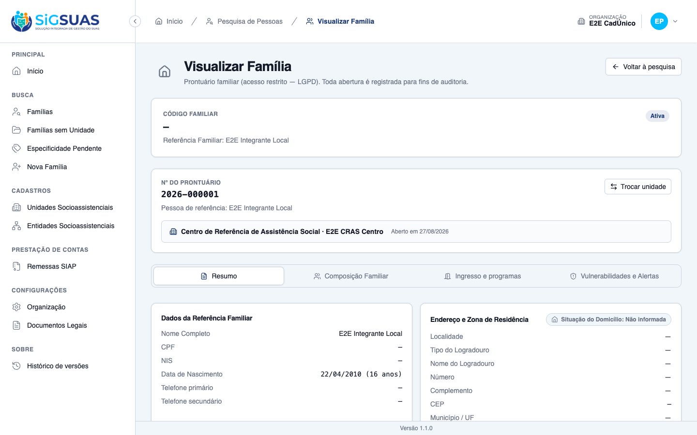
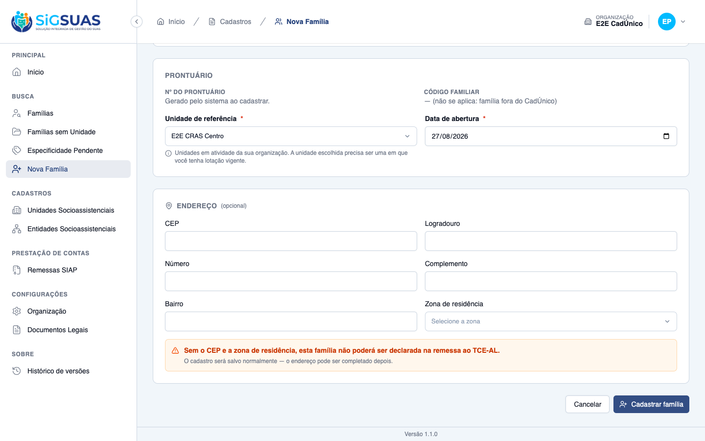
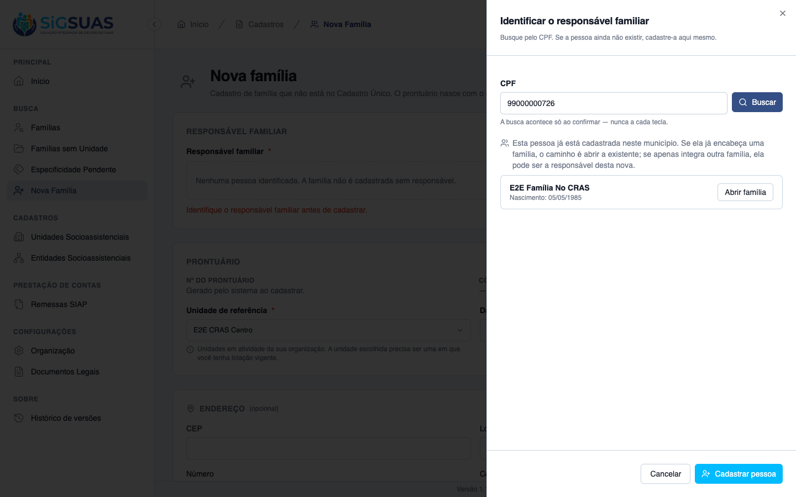
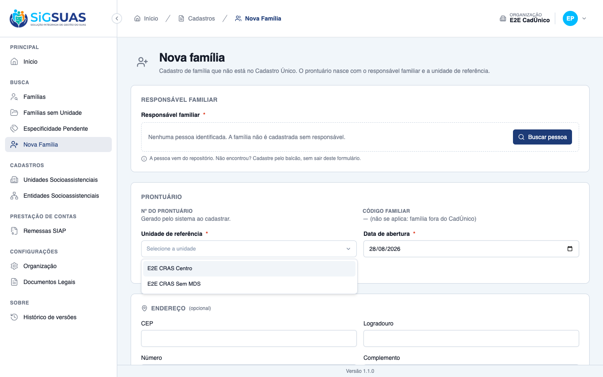

10 critérios de aceite. <b>8 evidenciados no navegador</b> e <b>2 por suíte automatizada</b> (CA02 e CA08, por dependerem de cenários que o ambiente de evidências não reproduz). Nenhum critério reprovado. A suíte da história fecha <b>17 testes / 128 asserções</b>. Esta é a segunda emissão do relatório: os dois critérios que estavam parciais foram <b>corrigidos no produto</b> e reevidenciados. O CA07 declarava “não recebe” o Bolsa Família de uma família manual sem que ninguém tivesse informado — o que poderia virar uma declaração ao TCE-AL que o município não fez —, e agora exibe “não informado”. O CA09 oferecia no cadastro manual unidades fora da lotação do profissional, que o backend recusava só ao final do preenchimento; a lista passou a sair do mesmo recorte por lotação que governa a abertura de prontuário. Detalhes em “Observações e ressalvas”.
| CA | Critério | Status |
|---|---|---|
| CA01 | Cadastrar família de responsável já cadastrado | ATENDIDO · navegador |
| CA02 | Cadastrar família de pessoa que não existia | ATENDIDO · automatizado |
| CA03 | Família sem responsável não é criada | ATENDIDO · navegador |
| CA04 | Sem código familiar do CadÚnico | ATENDIDO · navegador |
| CA05 | Aviso por endereço incompleto | ATENDIDO · navegador |
| CA06 | Responsável já encabeça outra família | ATENDIDO · navegador |
| CA07 | Família manual nasce sem os dados do CadÚnico | ATENDIDO · navegador |
| CA08 | A família aparece depois no CadÚnico | ATENDIDO · automatizado |
| CA09 | Operacional só cadastra na própria unidade | ATENDIDO · navegador |
| CA10 | Isolamento entre municípios | ATENDIDO · automatizado |
Critério (Gherkin): Dado que sou Operacional do Tenant com o add-on LGPD, lotado no "CRAS Centro" E que a pessoa que será a responsável já existe no repositório e foi vinculada Quando eu cadastrar a família informando o "CRAS Centro" como unidade de referência Então a família é criada com origem manual E recebe número de prontuário gerado pelo sistema E a data de abertura é registrada E o responsável consta da composição familiar como pessoa de referência
Como foi testado: Menu Nova Família → Buscar pessoa pelo CPF de alguém já vinculado ao município → Selecionar como responsável → unidade E2E CRAS Centro → Cadastrar família.

Critério (Gherkin): Dado que a pessoa que procurou a unidade não está no repositório Quando eu cadastrá-la pelo caminho da US-PRONT-06 e criar a família com ela como responsável Então a família é criada E o prontuário fica disponível para receber os demais blocos
Como foi testado: Evidência automatizada. O caminho existe e foi observado na tela — o diálogo de identificação do responsável oferece “Cadastrar pessoa” sem sair do formulário, e a tela anuncia: “A pessoa vem do repositório. Não encontrou? Cadastre pelo balcão, sem sair deste formulário.” A conclusão do fluxo encadeado (cadastrar pessoa dentro do cadastro de família) não pôde ser completada nesta sessão.
Evidência por cobertura automatizada — ver Anexo.
Critério (Gherkin): Dado que estou cadastrando uma família Quando eu tentar salvar sem identificar o responsável familiar Então a família não é criada E o sistema indica que o responsável precisa ser identificado
Como foi testado: Preencher a unidade de referência e tentar Cadastrar família sem identificar responsável.

Critério (Gherkin): Dado que cadastrei uma família de origem manual Quando eu consultar o prontuário dela Então o código familiar do MDS aparece vazio E isso não gera pendência
Como foi testado: Prontuário da família manual recém-criada.
Critério (Gherkin): Dado que estou cadastrando uma família e ainda não tenho o endereço completo Quando eu salvar sem o CEP Então a família é criada normalmente E o sistema avisa que ela não poderá ser declarada na remessa ao TCE-AL enquanto o endereço não estiver completo
Como foi testado: Cadastro concluído com o bloco de endereço em branco (o formulário o marca como opcional).
Critério (Gherkin): Dado que a pessoa escolhida como responsável já é responsável da família Silva no meu município Quando eu tentar criar uma nova família com ela Então a família não é criada E o sistema avisa que ela já é responsável de outra família E oferece o caminho para abrir a família existente
Como foi testado: Busca, no diálogo de identificação do responsável, pelo CPF de quem já é pessoa de referência de outra família do município.

Critério (Gherkin): Dado que cadastrei uma família de origem manual Quando eu consultar o prontuário Então renda, per capita, Bolsa Família, grupo populacional e especificidade social aparecem sem valor E a especificidade social consta como pendente, conforme a regra do prontuário
Como foi testado: Percurso pelos blocos do prontuário de uma família manual recém-criada. Reexecutado após a correção descrita em “Observações e ressalvas”.
Critério (Gherkin): Dado que cadastrei a família Souza manualmente, registrei o ingresso e três atendimentos E que a remessa seguinte do CadÚnico traz uma família cujo responsável tem o mesmo CPF Quando a importação for processada Então nenhuma família duplicada é criada E a família existente recebe o snapshot do CadÚnico e passa a ser tratada como importada E o ingresso, os atendimentos e a composição registrados pela equipe permanecem intactos
Como foi testado: Evidência automatizada. Exercer este critério exigiria processar uma remessa do CadÚnico contendo o CPF do responsável de uma família criada manualmente — um ciclo de importação fora do alcance deste dossiê.
Evidência por cobertura automatizada — ver Anexo.
Critério (Gherkin): Dado que sou Operacional do Tenant lotado apenas no "CRAS Centro" Quando eu cadastrar uma família Então só posso atribuir o "CRAS Centro" como unidade de referência
Como foi testado: Abertura do seletor de unidade no formulário de nova família, como operador lotado em duas unidades (E2E CRAS Centro e E2E CRAS Sem MDS). Reexecutado após a correção descrita em “Observações e ressalvas”.

Critério (Gherkin): Dado que sou usuário do município A Quando eu cadastrar uma família Então ela pertence ao município A E não é visível a nenhum outro município da plataforma
Como foi testado: Evidência automatizada. O ambiente de evidências possui uma única organização semeada, o que impede montar o cenário de dois municípios pelo navegador.
Evidência por cobertura automatizada — ver Anexo.
Registrado porque pode reaparecer: a primeira versão da migration que tornou o campo nulável usava o change() do framework. No driver em que a suíte roda, esse comando recria a tabela — e a recriação levou junto um índice único parcial (o que impede o mesmo responsável de encabeçar duas famílias, mas libera o vínculo quando a família é excluída logicamente).
O índice voltou como único total, e o teste que cobre justamente esse comportamento falhou — foi ele que denunciou. A migration foi reescrita com SQL específico por banco, recriando o índice parcial onde a reconstrução o derruba. Em produção o efeito não existiria, porque lá a alteração de coluna não mexe em índices; o problema aparecia apenas no ambiente de testes, e teria passado despercebido se aquele teste não existisse.
O formulário de nova família listava todas as unidades em atividade da organização, incluindo aquelas em que o profissional não tem lotação. Ele podia escolher uma delas, preencher responsável, data e endereço, e só ao submeter receber a recusa. A família nunca era criada em unidade indevida — o backend sempre recusou, inclusive contra payload forjado —, mas a oferta contrariava o CA09.
Por que estava assim: o endpoint que já devolvia a lista recortada por lotação exigia uma família existente, e no cadastro manual ela ainda não existe. A opção anterior foi usar o lookup de unidades ativas e deixar o backend barrar — uma decisão defensável, porque filtrar no front criaria uma segunda cópia da regra de acesso, que poderia divergir da primeira.
Correção aplicada: o backend passou a expor a MESMA lista sem exigir família em mãos, usando a mesma primitiva do corte por unidade, e o formulário passou a consumi-la. O front continua sem reimplementar a regra — quem decide segue sendo o backend. A rota nova carrega o mesmo gate de permissão das demais, e há teste de regressão garantindo que o operador vê apenas as suas unidades e o Master vê todas as do município.
Verificação: o seletor passou a oferecer apenas as duas unidades de lotação do profissional. Suíte da API: 3760 testes; frontend: 1726; ambos verdes.
O critério pede que o Bolsa Família apareça sem valor numa família manual, e a RN09 é explícita: nada do snapshot do CadÚnico é preenchido automaticamente, porque não há de onde tirar. O que a tela mostrava era “Não recebe”, e em banco o campo valia false — não nulo.
A origem do problema era o default da coluna. A importação preenche o campo explicitamente a partir do indicador do CadÚnico; a família manual não passa por lá, então herdava o false do banco.
Por que isso importa: o leiaute da remessa tem campo de perfil do Bolsa Família. Declarar “não recebe” por omissão é declarar ao TCE-AL algo que o município nunca afirmou. É exatamente a fronteira que a #10621 guarda com rigor entre “Família Sem Especificidades” (resposta dada) e “não informado” — o mesmo cuidado não havia alcançado o Bolsa Família.
Correção aplicada: a coluna passou a admitir nulo e perdeu o default, e a serialização deixou de coagir o valor para booleano. A tela ganhou um terceiro estado e passa a exibir “Não informado”. Famílias já existentes não foram convertidas retroativamente: no que já está gravado não há como distinguir o false vindo da importação do false vindo do default.
Verificação: família manual recém-criada nasce com o campo nulo e a tela exibe “Não informado”. Há teste cobrindo tanto o valor em banco quanto a serialização do detalhe.
Ao buscar como responsável uma pessoa que existe na plataforma mas está em outro município, a tela exibe novamente: “A vinculação exige a permissão de Visualização de Detalhes da Família. Solicite ao gestor Master da organização.” — para um profissional que possui essa permissão.
A causa é a mesma do achado registrado no dossiê da #10620: o componente GlobalPersonOutcome tem uma única mensagem de recusa, escrita para falta de permissão, e ela aparece sempre que o chamador fixa can-link="false". Aqui o chamador é ResponsiblePersonField.vue:310.
Ou seja: não é um caso isolado, são dois pontos de entrada com o mesmo sintoma. E, como lá, a explicação correta aparece logo ao lado (“A pessoa existe na plataforma, em outro município. A vinculação parte de um prontuário já existente — cadastre a família por lá ou procure o gestor Master da sua organização.”). Corrigir a mensagem no componente resolve os dois de uma vez.
Vale registrar um acerto de desenho observado no CA06. Ao buscar o responsável, a tela distingue os dois casos e explica ambos numa frase: “Se ela já encabeça uma família, o caminho é abrir a existente; se apenas integra outra família, ela pode ser a responsável desta nova.”
E age de acordo: para quem já encabeça, a ação de selecionar simplesmente não é oferecida — o erro não chega a ser possível. Para quem apenas integra, as duas ações aparecem. A equipe aprende a regra no momento em que precisa dela, em vez de descobri-la por uma mensagem de erro.
O CA01 exigiu criar uma família manual, e as tentativas dos CA03 e CA09 foram recusadas pelo próprio sistema (nada foi gravado). A família criada foi removida em definitivo ao final, junto com seu vínculo de composição.
Estado confirmado: o banco voltou a ter 12 famílias — exatamente as do seeder — e a pessoa usada como responsável preserva seu vínculo original na família de origem.
PASS Tests\Feature\Family\CreateManualFamilyTest ✓ it registers a manual family with a generated record number and the… 0.49s ✓ it registers a family for a person who did not exist yet, through t… 0.07s ✓ it refuses to create a family without an identified responsible (CA… 0.04s ✓ it refuses a responsible that does not exist in the person reposito… 0.03s ✓ it keeps the manual family without a CadUnico family code, and that… 0.04s ✓ it registers the family without a complete address and warns, witho… 0.04s ✓ it refuses a second family for the same responsible and offers the… 0.05s ✓ it rejects CadUnico snapshot fields sent in the manual payload (CA0… 0.03s ✓ it does not let the Operacional register in a unit outside the assi… 0.04s ✓ it rolls back the family and the address when the composition fails… 0.04s ✓ it regenerates the record number on collision instead of opening a… 0.04s ✓ it does not expose a deletion verb for families (P4) 0.04s ✓ it requires the LGPD add-on and an active assignment to register (R… 0.03s ✓ it enforces the one-family-per-responsible rule at the database lev… 0.03s ✓ it translates the responsible race condition into the same 409, nev… 0.04s PASS Tests\Feature\Family\ManualFamilyConsolidationTest ✓ it consolidates the manually registered family when the CadUnico re… 0.07s ✓ it keeps the manual family out of the remittance when the responsib… 0.06s Tests: 17 passed (152 assertions) Duration: 1.57s